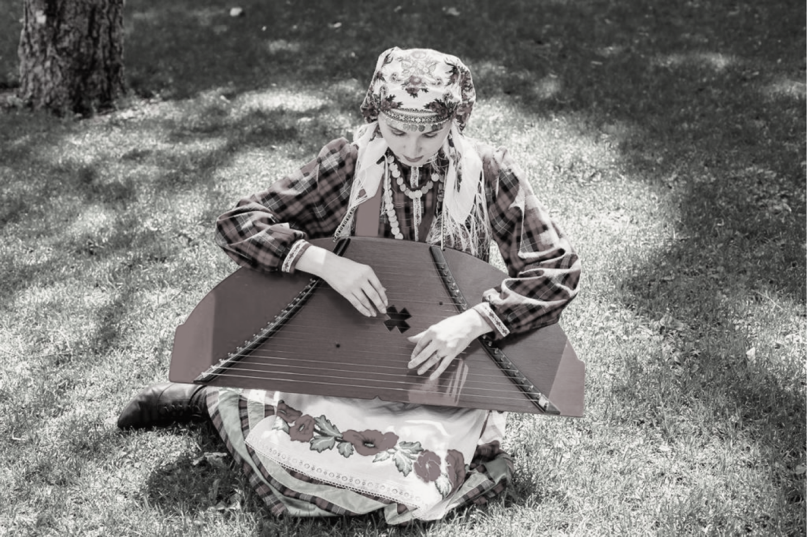
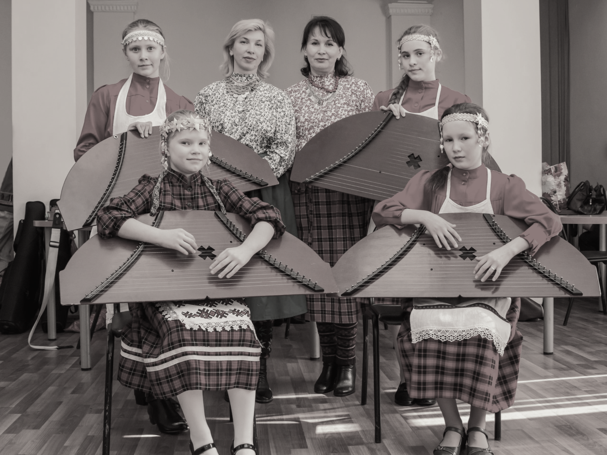

Вернуться на главную
Традиционные музыкальные инструменты
Традиционные удмуртские музыкальные инструменты представляют собой богатое разнообразие звуковых средств, которые играют важную роль в музыкальной культуре этноса. Одним из самых известных инструментов удмуртов является гудок, который имеет древние корни и используется для исполнения различных музыкальных произведений, от песен и танцев до ритуальных обрядов. Еще одним характерным инструментом является бубен, который используется для ритмического акцентирования музыкальных композиций и создания особой атмосферы во время выступлений.
Кроме того, удмурты также играют на татарстане, маленьком барабане, который имеет особое звучание и используется для исполнения традиционных мелодий и ритмов. Важным элементом удмуртской музыкальной культуры являются также народные струнные инструменты, например, гусли и кокшли.
Таким образом, удмуртские музыкальные инструменты представляют собой уникальное наследие этнической музыкальной культуры, которая отличается своей оригинальностью, красотой звучания и глубоким культурным смыслом. Виртуозное исполнение удмуртской музыки на традиционных инструментах погружает слушателей в атмосферу духовного богатства и красоты этого народа.
Современная удмуртская музыка
Современная удмуртская музыка - это важная часть культурного наследия удмуртского народа, представляющая собой синтез традиционных удмуртских музыкальных элементов и современных музыкальных тенденций. Она отражает дух и традиции этноса, соединяя в себе уникальные мелодии, ритмы и инструментальную многогранность. Современная удмуртская музыка воплощает в себе историческое наследие и культурные ценности удмуртского народа, а также открывает новые горизонты и возможности для творчества и самовыражения современных музыкантов и композиторов. Ее уникальность и богатство делают ее значимой частью мировой музыкальной культуры, привлекая внимание как любителей этнической музыки, так и ценителей современных музыкальных течений.
Традиционные песни
Традиционные удмуртские песни - это неповторимое историческое наследие, передающее дух и культуру удмуртского народа через мелодии, слова и ритмы. Эти песни олицетворяют богатство удмуртской музыкальной традиции, отражают жизнь, обычаи, верования и историю этого народа.
Удмуртские песни часто исполняются на родном языке и передают важные ценности и символы удмуртской культуры. В них часто звучат поэтические тексты, отражающие любовь к природе, родной земле, к истории и традициям своего народа. Мелодии удмуртских песен обычно являются мелодичными, эмоциональными и запоминающимися, они могут быть как радостными и задорными, так и глубокими и меланхоличными.
Удмуртские песни - это не только звучание музыки, но и хранительницы уникальной культурной информации, передающейся из поколения в поколение. Они помогают сохранить и уважать традиции и наследие удмуртского народа, а также способствуют объединению людей и сохранению исторической памяти.